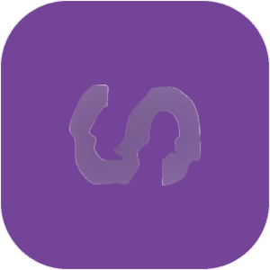

SKT Launcher
SKT Launcher — единый быстрый лаунчер для шахматистов, объединяющий модификации для Chess.com, Lichess и будущих платформ. Доступен для Windows (бесплатно на 30 дней), а версия для Android уже готовится к выходу.

SKT LauncherSKT Launcher — единый быстрый лаунчер для шахматистов, объединяющий модификации для Chess.com, Lichess и будущих платформ. Доступен для Windows (бесплатно на 30 дней), а версия для Android уже готовится к выходу.
Вся основа лаунчера и телеметрия движка написаны на Rust — благодаря этому приложение открывается мгновенно и экономит ресурсы системы. Внутри доступна модель SKT Arch v0.1 beta (бесплатно на 30 дней), сочетающая Stockfish 19 и нейросеть AIarch v1 для глубокого и быстрого анализа позиций.
Telegram-канал и загрузка: @sktlauncher
Репозиторий сайта: github.com/Sak1to/skt-launcher